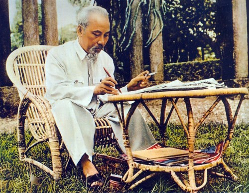

Chủ tịch Hồ Chí Minh

Chủ tịch Hồ Chí Minh (19/5/1890 - 02/9/1969)
Tiểu sử Chủ tịch Hồ Chí Minh
-
Chủ tịch Hồ Chí Minh (tên lúc nhỏ là Nguyễn Sinh Cung, tên khi đi học là Nguyễn Tất Thành, trong nhiều năm hoạt động cách mạng trước đây lấy tên là Nguyễn Ái Quốc), sinh ngày 19/5/1890 ở làng Kim Liên, xã Nam Liên (nay là xã Kim Liên), huyện Nam Đàn, tỉnh Nghệ An; mất ngày 02/9/1969 tại Hà Nội.
- 06/1911: Hồ Chí Minh đã rời Tổ quốc đi sang phương Tây để tìm con đường giải phóng dân tộc.
- 03/6/1911: Nguyễn Tất Thành nhận thẻ nhân viên lên con tàu Amiran Latusơ Tơrêvin với cái tên là Văn Ba. Hai ngày sau, 05/6/1911 con tàu rời cảng Nhà Rồng đến Pháp.
- 1912 - 1917: Dưới cái tên Nguyễn Tất Thành, Hồ Chí Minh đến nhiều nước ở châu Á, châu Âu, châu Mỹ, châu Phi, sống hoà mình với nhân dân lao động. Qua thực tiễn, Hồ Chí Minh cảm thông sâu sắc cuộc sống khổ cực của nhân dân lao động và các dân tộc thuộc địa cũng như nguyện vọng thiêng liêng của họ. Hồ Chí Minh sớm nhận thức được cuộc đấu tranh giải phóng dân tộc của nhân dân Việt Nam là một bộ phận trong cuộc đấu tranh chung của nhân dân thế giới và tích cực hoạt động nhằm đoàn kết nhân dân các dân tộc trong cuộc đấu tranh giành độc lập, tự do.
- 1919: Lấy tên là Nguyễn Ái Quốc, thay mặt những người Việt Nam yêu nước tại Pháp, Hồ Chí Minh đã gửi tới Hội nghị Vécxây (Versailles) bản yêu sách đòi quyền tự do cho nhân dân Việt Nam và cũng là quyền tự do cho nhân dân các nước thuộc địa.
- 12/1920: Nguyễn Ái Quốc tham dự Đại hội lần thứ XVIII Đảng Xã hội Pháp và bỏ phiếu tán thành Đảng gia nhập Quốc tế III (Quốc tế Cộng sản), trở thành một trong những người sáng lập Đảng Cộng sản Pháp. Từ một người yêu nước trở thành một người cộng sản, Hồ Chí Minh khẳng định: “Muốn cứu nước và giải phóng dân tộc, không có con đường nào khác con đường cách mạng vô sản”.
- 1921: Cùng với một số người yêu nước của các thuộc địa Pháp, Nguyễn Ái Quốc tham gia sáng lập Hội Liên hiệp các dân tộc thuộc địa. Tháng 4/1922, Hội xuất bản báo “Người cùng khổ” (Le Paria) nhằm đoàn kết, tổ chức và hướng dẫn phong trào đấu tranh giải phóng dân tộc ở các nước thuộc địa. Nhiều bài báo của Nguyễn Ái Quốc đã được đưa vào tác phẩm “Bản án chế độ thực dân Pháp”, xuất bản tại Paris năm 1925. Đây là một công trình nghiên cứu về bản chất của chủ nghĩa thực dân, góp phần thức tỉnh và cổ vũ nhân dân các nước thuộc địa đứng lên tự giải phóng.
- 6/1923: Nguyễn Ái Quốc từ Pháp sang Liên Xô, làm việc tại Quốc tế Cộng sản. Tháng 10/1923, tại Hội nghị Quốc tế Nông dân lần thứ nhất, Nguyễn Ái Quốc được bầu vào Hội đồng Quốc tế Nông dân và là đại biểu duy nhất của nông dân thuộc địa được cử vào Đoàn Chủ tịch của Hội đồng. Tiếp đó tham dự Đại hội Quốc tế Cộng sản lần thứ V, Đại hội Quốc tế Thanh niên lần thứ IV, Đại hội Quốc tế Công hội đỏ. Tại các đại hội, Nguyễn Ái Quốc kiên trì bảo vệ và phát triển sáng tạo tư tưởng của V.I. Lênin về vấn đề dân tộc và thuộc địa, hướng sự quan tâm của Quốc tế Cộng sản tới phong trào giải phóng dân tộc.
- 11/1924: Với tư cách là Uỷ viên Ban Phương Đông Quốc tế Cộng sản và Uỷ viên Đoàn Chủ tịch Quốc tế Nông dân, Nguyễn Ái Quốc đến Quảng Châu (Trung Quốc). Tại Quảng Châu, Nguyễn Ái Quốc làm việc trong đoàn cố vấn Bôrôđin của Chính phủ Liên Xô bên cạnh Chính phủ Tôn Dật Tiên.
- 1925: Nguyễn Ái Quốc thành lập Hội Việt Nam Cách mạng Thanh niên, trực tiếp mở lớp huấn luyện đào tạo cán bộ cách mạng, ra tuần báo “Thanh niên”, tờ báo cách mạng đầu tiên của Việt Nam nhằm truyền bá chủ nghĩa Mác - Lênin về Việt Nam, chuẩn bị cho việc thành lập Đảng Cộng sản Việt Nam. Các bài giảng của Nguyễn Ái Quốc tại các lớp huấn luyện được tập hợp in thành sách “Đường Kách mệnh” - một văn kiện lý luận quan trọng đặt cơ sở tư tưởng cho đường lối cách mạng Việt Nam.
- 5/1927: Nguyễn Ái Quốc rời Quảng Châu đi Mátxcơva (Liên Xô), sau đó đi Béclin (Đức), đi Brúcxen (Bỉ), tham dự phiên họp mở rộng của Đại hội đồng Liên đoàn chống chiến tranh đế quốc, sau đó đi Ý và từ đây về châu Á.
- 7/1928 -> 11/1929: Nguyễn Ái Quốc hoạt động trong phong trào Việt kiều yêu nước ở Xiêm (Thái Lan), tiếp tục chuẩn bị cho sự ra đời của Đảng Cộng sản Việt Nam.
- 2/1930: Nguyễn Ái Quốc chủ trì Hội nghị thành lập Đảng họp tại Cửu Long, thuộc Hồng Kông (Trung Quốc). Hội nghị đã thông qua Chính cương vắn tắt, Sách lược vắn tắt, Điều lệ vắn tắt của Đảng Cộng sản Việt Nam, đội tiên phong của giai cấp công nhân và toàn thể dân tộc Việt Nam.
- 6/1931: Nguyễn Ái Quốc bị chính quyền Anh bắt giam tại Hồng Kông. Đầu năm 1933, Nguyễn Ái Quốc được trả tự do.
- 1934 -> 1938: Nguyễn Ái Quốc nghiên cứu tại Viện Nghiên cứu các vấn đề dân tộc thuộc địa tại Mátxcơva (Liên Xô). Kiên trì con đường đã xác định cho cách mạng Việt Nam, Người tiếp tục theo dõi, chỉ đạo phong trào cách mạng trong nước.
- 10/1938: Người rời Liên Xô sang Trung Quốc, bắt liên lạc với tổ chức Đảng chuẩn bị về nước.
- 28/1/1941: Nguyễn Ái Quốc về nước sau hơn 30 năm xa Tổ quốc.
- 5/1941: Nguyễn Ái Quốc triệu tập Hội nghị lần thứ VIII Ban Chấp hành Trung ương Đảng, quyết định đường lối cứu nước trong thời kỳ mới, thành lập Việt Nam độc lập đồng minh (Việt Minh), tổ chức xây dựng lực lượng vũ trang giải phóng, xây dựng căn cứ địa cách mạng.
- 8/1942: Lấy tên là Hồ Chí Minh, Người đại diện cho Mặt trận Việt Minh và Phân hội Việt Nam thuộc Hiệp hội Quốc tế chống xâm lược sang Trung Quốc tìm sự liên minh quốc tế, cùng phối hợp hành động chống phát xít trên chiến trường Thái Bình Dương. Người bị chính quyền địa phương của Tưởng Giới Thạch bắt giam trong các nhà lao của tỉnh Quảng Tây. Trong thời gian một năm 14 ngày bị tù, Người đã viết tập thơ “Nhật ký trong tù” với 133 bài thơ chữ Hán. Tháng 9/1943, Hồ Chí Minh được trả tự do.
- 9/1944: Hồ Chí Minh trở về căn cứ Cao Bằng. Tháng 12/1944, Hồ Chí Minh chỉ thị thành lập Đội Việt Nam tuyên truyền giải phóng quân, tiền thân của Quân đội nhân dân Việt Nam.
- 5/1945: Hồ Chí Minh rời Cao Bằng về Tân Trào (Tuyên Quang). Tại đây theo đề nghị của Hồ Chí Minh, Hội nghị toàn quốc của Đảng và Đại hội Quốc dân đã họp quyết định Tổng khởi nghĩa. Đại hội Quốc dân đã bầu ra Uỷ ban giải phóng dân tộc Việt Nam (tức Chính phủ lâm thời) do Hồ Chí Minh làm Chủ tịch.
- 8/1945: Hồ Chí Minh cùng Trung ương Đảng lãnh đạo nhân dân khởi nghĩa giành chính quyền thắng lợi. Ngày 2/9/1945, tại Quảng trường Ba Đình (Hà Nội), Hồ Chí Minh đọc “Tuyên ngôn độc lập”, tuyên bố thành lập nước Việt Nam Dân chủ Cộng hòa và ra mắt Chính phủ lâm thời do Người làm Chủ tịch kiêm Bộ trưởng Bộ Ngoại giao; tổ chức Tổng tuyển cử tự do trong cả nước, bầu Quốc hội và thông qua Hiến pháp dân chủ đầu tiên của Việt Nam.
- 01/01/1946: Chính phủ liên hiệp lâm thời được thành lập do Hồ Chí Minh làm Chủ tịch, kiêm Bộ trưởng Bộ Ngoại giao.
- 01/1946: Quốc hội khóa I đã bầu Người làm Chủ tịch nước Việt Nam Dân chủ Cộng hòa.
- 02/3/1946: Chính phủ liên hiệp kháng chiến được thành lập do Hồ Chí Minh làm Chủ tịch.
- 3/11/1946: Chủ tịch Hồ Chí Minh được Quốc hội giao nhiệm vụ thành lập Chính phủ mới do Người làm Chủ tịch nước kiêm Thủ tướng Chính phủ (từ 11/1946 đến 9/1955) và kiêm Bộ trưởng Bộ Ngoại giao (từ 11/1946 đến 1947).
- 19/12/1946: Người kêu gọi cả nước kháng chiến chống thực dân Pháp xâm lược, bảo vệ độc lập, tự do của Tổ quốc, bảo vệ và phát triển những thành quả của Cách mạng Tháng Tám.Tại Đại hội lần thứ II của Đảng (1951), Người được bầu làm Chủ tịch Ban Chấp hành Trung ương Đảng. Dưới sự lãnh đạo của Trung ương Đảng, đứng đầu là Chủ tịch Hồ Chí Minh, cuộc kháng chiến của nhân dân Việt Nam chống thực dân Pháp xâm lược đã giành được thắng lợi to lớn, kết thúc bằng chiến thắng vĩ đại Điện Biên Phủ (7/5/1954).Sau khi miền Bắc được hoàn toàn giải phóng (1955) Trung ương Đảng và Chủ tịch Hồ Chí Minh đề ra hai nhiệm vụ chiến lược của cách mạng Việt Nam là tiến hành cách mạng xã hội chủ nghĩa và xây dựng chủ nghĩa xã hội ở miền Bắc, đồng thời đấu tranh giải phóng miền Nam, thực hiện thống nhất nước nhà, hoàn thành cách mạng dân tộc dân chủ nhân dân trong cả nước.
- 10/1956: Tại Hội nghị Trung ương mở rộng lần thứ X (khóa II), Chủ tịch Hồ Chí Minh được bầu làm Chủ tịch Đảng, kiêm làm Tổng Bí thư của Đảng.
- 1964: Đế quốc Mỹ mở cuộc chiến tranh phá hoại bằng không quân đánh phá miền Bắc Việt Nam. Người động viên toàn thể nhân dân Việt Nam vượt mọi khó khăn gian khổ, quyết tâm đánh thắng giặc Mỹ xâm lược. Người khẳng định: “Chiến tranh có thể kéo dài 5 năm, 10 năm, 20 năm hoặc lâu hơn nữa. Hà Nội, Hải Phòng và một số thành phố, xí nghiệp có thể bị tàn phá, song nhân dân Việt Nam quyết không sợ! Không có gì quí hơn độc lập, tự do! Đến ngày thắng lợi, nhân dân ta sẽ xây dựng lại đất nước ta đàng hoàng hơn, to đẹp hơn!”. Chủ tịch Hồ Chí Minh mất ngày 02/9/1969, tại Hà Nội.
Chủ tịch Hồ Chí Minh đã vận dụng sáng tạo chủ nghĩa Mác - Lênin vào điều kiện cụ thể của Việt Nam, đề ra đường lối đúng đắn đưa cách mạng Việt Nam đi từ thắng lợi này đến thắng lợi khác. Người sáng lập ra Đảng Mácxít - Lêninnít ở Việt Nam, sáng lập ra Mặt trận dân tộc thống nhất Việt Nam, sáng lập ra các lực lượng vũ trang nhân dân Việt Nam và sáng lập ra nước Việt Nam Dân chủ Cộng hòa, góp phần tăng cường đoàn kết quốc tế. Người là tấm gương sáng của tinh thần tập thể, ý thức tổ chức và đạo đức cách mạng.